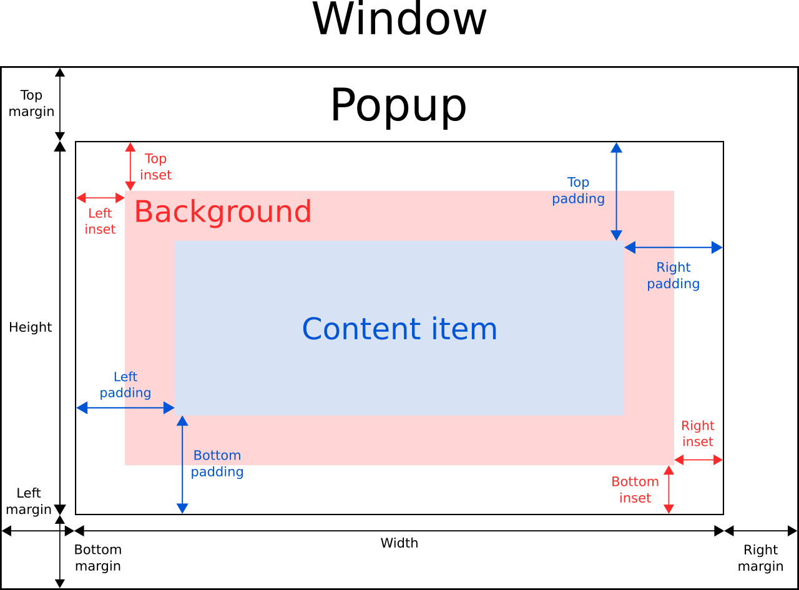
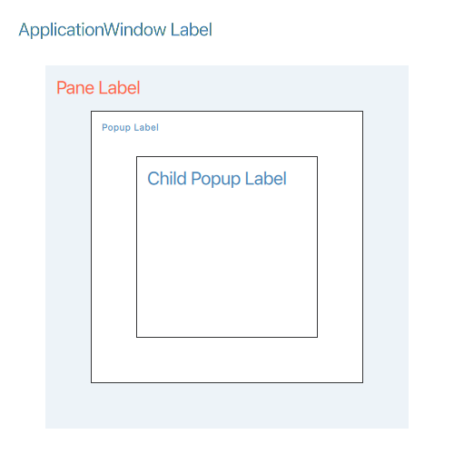
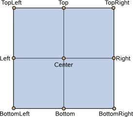

Popup QML Type
Base type of popup-like user interface controls. More...
| Import Statement: | import QtQuick.Controls |
| Inherits: | |
| Inherited By: |
Properties
- activeFocus : bool
- anchors.centerIn : Item
(since QtQuick.Controls 2.5 (Qt 5.12)) - availableHeight : real
- availableWidth : real
- background : Item
- bottomInset : real
(since QtQuick.Controls 2.5 (Qt 5.12)) - bottomMargin : real
- bottomPadding : real
- clip : bool
- closePolicy : enumeration
- contentChildren : list<Item>
- contentData : list<QtObject>
- contentHeight : real
- contentItem : Item
- contentWidth : real
- dim : bool
- enabled : bool
(since QtQuick.Controls 2.3 (Qt 5.10)) - enter : Transition
- exit : Transition
- focus : bool
- font : font
- height : real
- horizontalPadding : real
(since QtQuick.Controls 2.5 (Qt 5.12)) - implicitBackgroundHeight : real
(since QtQuick.Controls 2.5 (Qt 5.12)) - implicitBackgroundWidth : real
(since QtQuick.Controls 2.5 (Qt 5.12)) - implicitContentHeight : real
(since QtQuick.Controls 2.5 (Qt 5.12)) - implicitContentWidth : real
(since QtQuick.Controls 2.5 (Qt 5.12)) - implicitHeight : real
- implicitWidth : real
- leftInset : real
(since QtQuick.Controls 2.5 (Qt 5.12)) - leftMargin : real
- leftPadding : real
- locale : Locale
- margins : real
- mirrored : bool
(since QtQuick.Controls 2.3 (Qt 5.10)) - modal : bool
- opacity : real
- opened : bool
(since QtQuick.Controls 2.3 (Qt 5.10)) - padding : real
- palette : palette
(since QtQuick.Controls 2.3 (Qt 5.10)) - parent : Item
- rightInset : real
(since QtQuick.Controls 2.5 (Qt 5.12)) - rightMargin : real
- rightPadding : real
- scale : real
- spacing : real
(since QtQuick.Controls 2.1 (Qt 5.8)) - topInset : real
(since QtQuick.Controls 2.5 (Qt 5.12)) - topMargin : real
- topPadding : real
- transformOrigin : enumeration
- verticalPadding : real
(since QtQuick.Controls 2.5 (Qt 5.12)) - visible : bool
- width : real
- x : real
- y : real
- z : real
Signals
- void aboutToHide()
- void aboutToShow()
- void closed()
- void opened()
Methods
- void close()
- forceActiveFocus(enumeration reason)
- void open()
Detailed Description
Popup is the base type of popup-like user interface controls. It can be used with Window or ApplicationWindow.
import QtQuick.Window 2.2 import QtQuick.Controls 2.12 ApplicationWindow { id: window width: 400 height: 400 visible: true Button { text: "Open" onClicked: popup.open() } Popup { id: popup x: 100 y: 100 width: 200 height: 300 modal: true focus: true closePolicy: Popup.CloseOnEscape | Popup.CloseOnPressOutsideParent } }
In order to ensure that a popup is displayed above other items in the scene, it is recommended to use ApplicationWindow. ApplicationWindow also provides background dimming effects.
Popup does not provide a layout of its own, but requires you to position its contents, for instance by creating a RowLayout or a ColumnLayout.
Items declared as children of a Popup are automatically parented to the Popups's contentItem. Items created dynamically need to be explicitly parented to the contentItem.
Popup Layout
The following diagram illustrates the layout of a popup within a window:

The implicitWidth and implicitHeight of a popup are typically based on the implicit sizes of the background and the content item plus any insets and paddings. These properties determine how large the popup will be when no explicit width or height is specified.
The geometry of the contentItem is determined by the padding. The following example reserves 10px padding between the boundaries of the popup and its content:
Popup { padding: 10 contentItem: Text { text: "Content" } }
The background item fills the entire width and height of the popup, unless insets or an explicit size have been given for it.
Negative insets can be used to make the background larger than the popup. The following example uses negative insets to place a shadow outside the popup's boundaries:
Popup { topInset: -2 leftInset: -2 rightInset: -6 bottomInset: -6 background: BorderImage { source: ":/images/shadowed-background.png" } }
Popup Sizing
If only a single item is used within a Popup, it will resize to fit the implicit size of its contained item. This makes it particularly suitable for use together with layouts.
Popup { ColumnLayout { anchors.fill: parent CheckBox { text: qsTr("E-mail") } CheckBox { text: qsTr("Calendar") } CheckBox { text: qsTr("Contacts") } } }
Sometimes there might be two items within the popup:
Popup { SwipeView { // ... } PageIndicator { anchors.horizontalCenter: parent.horizontalCenter anchors.bottom: parent.bottom } }
In this case, Popup cannot calculate a sensible implicit size. Since we're anchoring the PageIndicator over the SwipeView, we can simply set the content size to the view's implicit size:
Popup { contentWidth: view.implicitWidth contentHeight: view.implicitHeight SwipeView { id: view // ... } PageIndicator { anchors.horizontalCenter: parent.horizontalCenter anchors.bottom: parent.bottom } }
Note: The popup's content item gets parented to the overlay, and does not live within the popup's parent. Because of that, a scale applied to the tree in which the popup lives does not apply to the visual popup. To make the popup of e.g. a ComboBox follow the scale of the combobox, apply the same scale to the overlay as well:
Window { property double scaleFactor: 2.0 Scale { id: scale xScale: scaleFactor yScale: scaleFactor } Item { id: scaledContent transform: scale ComboBox { id: combobox // ... } } Overlay.overlay.transform: scale }
Popup Positioning
Similar to items in Qt Quick, Popup's x and y coordinates are relative to its parent. This means that opening a popup that is a child of a Button, for example, will cause the popup to be positioned relative to the button.
The following example uses the attached Overlay.overlay property to position a popup in the center of the window, despite the position of the button that opens the popup:
Button { onClicked: popup.open() Popup { id: popup parent: Overlay.overlay x: Math.round((parent.width - width) / 2) y: Math.round((parent.height - height) / 2) width: 100 height: 100 } }
Another way to center a popup in the window regardless of its parent item is to use anchors.centerIn:
ApplicationWindow { id: window // ... Pane { // ... Popup { anchors.centerIn: Overlay.overlay } } }
To ensure that the popup is positioned within the bounds of the enclosing window, the margins property can be set to a non-negative value.
Showing Non-Child Items in Front of Popup
Popup sets its contentItem's visual parent to be the window's overlay, in order to ensure that the popup appears in front of everything else in the scene. In some cases, it might be useful to put an item in front of a popup, such as a virtual keyboard. This can be done by setting the item's parent to the overlay, and giving the item a positive z value. The same result can also be achieved by waiting until the popup is opened, before re-parenting the item to the overlay.
Popup {
id: popup
visible: true
anchors.centerIn: parent
margins: 10
closePolicy: Popup.CloseOnEscape
ColumnLayout {
TextField {
placeholderText: qsTr("Username")
}
TextField {
placeholderText: qsTr("Password")
echoMode: TextInput.Password
}
}
}
InputPanel {
parent: Overlay.overlay
width: parent.width
y: popup.y + popup.topMargin + (window.activeFocusItem?.y ?? 0) + (window.activeFocusItem?.height ?? 0)
z: 1
}
Popup Transitions
Since Qt 5.15.3 the following properties are restored to their original values from before the enter transition after the exit transition is completed.
This allows the built-in styles to animate on these properties without losing any explicitly defined value.
Back/Escape Event Handling
By default, a Popup will close if:
- It has activeFocus,
- Its closePolicy is
Popup.CloseOnEscape, and - The user presses the key sequence for QKeySequence::Cancel (typically the Escape key)
To prevent this from happening, either:
- Don't give the popup focus.
- Set the popup's closePolicy to a value that does not include
Popup.CloseOnEscape. - Handle Keys' escapePressed signal in a child item of the popup so that it gets the event before the Popup.
Property Propagation
Popup inherits fonts, palettes and attached properties through its parent window, not its object or visual parent:
import QtQuick.Controls.Basic ApplicationWindow { width: 500 height: 500 visible: true font.pixelSize: 20 palette.windowText: "steelblue" // This will have a pixelSize of 20 and be "steelblue" in color. header: Label { text: "ApplicationWindow Label" leftPadding: 20 topPadding: 20 } Pane { width: 400 height: 400 anchors.centerIn: parent palette.window: "#edf3f8" palette.windowText: "tomato" // This will have a pixelSize of 20 and be "tomato" in color. Label { text: "Pane Label" } Popup { width: 300 height: 300 anchors.centerIn: parent font.pixelSize: 10 visible: true // This will have a pixelSize of 10 and "steelblue" in color. Label { text: "Popup Label" } Popup { width: 200 height: 200 anchors.centerIn: parent visible: true // This will have a pixelSize of 20 and be "steelblue" in color. Label { text: "Child Popup Label" } } } } }

In addition, popups do not propagate their properties to child popups. This behavior is modelled on Qt Widgets, where a Qt::Popup widget is a top-level window. Top-level windows do not propagate their properties to child windows.
Certain derived types like ComboBox are typically implemented in such a way that the popup is considered an integral part of the control, and as such, may inherit things like attached properties. For example, in the Material style ComboBox, the theme and other attached properties are explicitly inherited by the Popup from the ComboBox itself:
popup: T.Popup { // ... Material.theme: control.Material.theme Material.accent: control.Material.accent Material.primary: control.Material.primary }
So, to ensure that a child popup has the same property values as its parent popup, explicitly set those properties:
Popup { id: parentPopup // ... Popup { palette: parentPopup.palette } }
See also Popup Controls, Customizing Popup, and ApplicationWindow.
Property Documentation
activeFocus : bool |
This property holds whether the popup has active focus.
See also focus and Keyboard Focus in Qt Quick.
anchors.centerIn : Item |
Anchors provide a way to position an item by specifying its relationship with other items.
A common use case is to center a popup within its parent. One way to do this is with the x and y properties. Anchors offer a more convenient approach:
Pane { // ... Popup { anchors.centerIn: parent } }
It is also possible to center the popup in the window by using Overlay:
ApplicationWindow { id: window // ... Pane { // ... Popup { anchors.centerIn: Overlay.overlay } } }
This makes it easy to center a popup in the window from any component.
Note: Popups can only be centered within their immediate parent or the window overlay; trying to center in other items will produce a warning.
This property was introduced in QtQuick.Controls 2.5 (Qt 5.12).
See also Popup Positioning, anchors, and Using Qt Quick Controls types in property declarations.
availableHeight : real |
This property holds the height available to the contentItem after deducting vertical padding from the height of the popup.
See also padding, topPadding, and bottomPadding.
availableWidth : real |
This property holds the width available to the contentItem after deducting horizontal padding from the width of the popup.
See also padding, leftPadding, and rightPadding.
background : Item |
This property holds the background item.
Note: If the background item has no explicit size specified, it automatically follows the popup's size. In most cases, there is no need to specify width or height for a background item.
Note: Most popups use the implicit size of the background item to calculate the implicit size of the popup itself. If you replace the background item with a custom one, you should also consider providing a sensible implicit size for it (unless it is an item like Image which has its own implicit size).
See also Customizing Popup.
bottomInset : real |
This property holds the bottom inset for the background.
This property was introduced in QtQuick.Controls 2.5 (Qt 5.12).
See also Popup Layout and topInset.
bottomMargin : real |
This property holds the distance between the bottom edge of the popup and the bottom edge of its window.
A popup with a negative bottom margin is not pushed within the bottom edge of the enclosing window. The default value is -1.
See also margins, topMargin, and Popup Layout.
bottomPadding : real |
This property holds the bottom padding. Unless explicitly set, the value is equal to verticalPadding.
The padding properties are used to control the geometry of the content item.
Popup uses the same approach to padding as Control. For a visual explanation of the padding system, see the Control Layout section of the documentation.
See also padding, topPadding, verticalPadding, and availableHeight.
clip : bool |
This property holds whether clipping is enabled. The default value is false.
closePolicy : enumeration |
This property determines the circumstances under which the popup closes. The flags can be combined to allow several ways of closing the popup.
The available values are:
| Constant | Description |
|---|---|
Popup.NoAutoClose | The popup will only close when manually instructed to do so. |
Popup.CloseOnPressOutside | The popup will close when the mouse is pressed outside of it. |
Popup.CloseOnPressOutsideParent | The popup will close when the mouse is pressed outside of its parent. |
Popup.CloseOnReleaseOutside | The popup will close when the mouse is released outside of it. |
Popup.CloseOnReleaseOutsideParent | The popup will close when the mouse is released outside of its parent. |
Popup.CloseOnEscape | The popup will close when the escape key is pressed while the popup has active focus. |
The CloseOnPress* and CloseOnRelease* policies only apply for events outside of popups. That is, if there are two popups open and the first has Popup.CloseOnPressOutside as its policy, clicking on the second popup will not result in the first closing.
The default value is Popup.CloseOnEscape | Popup.CloseOnPressOutside.
Note: There is a known limitation that the Popup.CloseOnReleaseOutside and Popup.CloseOnReleaseOutsideParent policies only work with modal popups.
This property holds the list of content children.
The list contains all items that have been declared in QML as children of the popup.
Note: Unlike contentData, contentChildren does not include non-visual QML objects.
See also Item::children and contentData.
This property holds the list of content data.
The list contains all objects that have been declared in QML as children of the popup.
Note: Unlike contentChildren, contentData does include non-visual QML objects.
See also Item::data and contentChildren.
contentHeight : real |
This property holds the content height. It is used for calculating the total implicit height of the Popup.
For more information, see Popup Sizing.
See also contentWidth.
contentItem : Item |
This property holds the content item of the popup.
The content item is the visual implementation of the popup. When the popup is made visible, the content item is automatically reparented to the overlay item.
Note: The content item is automatically resized to fit within the padding of the popup.
Note: Most popups use the implicit size of the content item to calculate the implicit size of the popup itself. If you replace the content item with a custom one, you should also consider providing a sensible implicit size for it (unless it is an item like Text which has its own implicit size).
See also Customizing Popup.
contentWidth : real |
This property holds the content width. It is used for calculating the total implicit width of the Popup.
For more information, see Popup Sizing.
See also contentHeight.
dim : bool |
This property holds whether the popup dims the background.
Unless explicitly set, this property follows the value of modal. To return to the default value, set this property to undefined.
See also modal and Overlay.modeless.
enabled : bool |
This property holds whether the popup is enabled. The default value is true.
This property was introduced in QtQuick.Controls 2.3 (Qt 5.10).
See also visible and Item::enabled.
enter : Transition |
This property holds the transition that is applied to the popup item when the popup is opened and enters the screen.
The following example animates the opacity of the popup when it enters the screen:
Popup { enter: Transition { NumberAnimation { property: "opacity"; from: 0.0; to: 1.0 } } }
See also exit.
exit : Transition |
This property holds the transition that is applied to the popup item when the popup is closed and exits the screen.
The following example animates the opacity of the popup when it exits the screen:
Popup { exit: Transition { NumberAnimation { property: "opacity"; from: 1.0; to: 0.0 } } }
See also enter.
focus : bool |
This property holds whether the popup wants focus.
When the popup actually receives focus, activeFocus will be true. For more information, see Keyboard Focus in Qt Quick.
The default value is false.
See also activeFocus.
font : font |
This property holds the font currently set for the popup.
Popup propagates explicit font properties to its children. If you change a specific property on a popup's font, that property propagates to all of the popup's children, overriding any system defaults for that property.
Popup { font.family: "Courier" Column { Label { text: qsTr("This will use Courier...") } Switch { text: qsTr("... and so will this") } } }
See also Control::font and ApplicationWindow::font.
height : real |
This property holds the height of the popup.
horizontalPadding : real |
This property holds the horizontal padding. Unless explicitly set, the value is equal to padding.
The padding properties are used to control the geometry of the content item.
Popup uses the same approach to padding as Control. For a visual explanation of the padding system, see the Control Layout section of the documentation.
This property was introduced in QtQuick.Controls 2.5 (Qt 5.12).
See also padding, leftPadding, rightPadding, and verticalPadding.
implicitBackgroundHeight : real |
This property holds the implicit background height.
The value is equal to background ? background.implicitHeight : 0.
This property was introduced in QtQuick.Controls 2.5 (Qt 5.12).
See also implicitBackgroundWidth and implicitContentHeight.
implicitBackgroundWidth : real |
This property holds the implicit background width.
The value is equal to background ? background.implicitWidth : 0.
This property was introduced in QtQuick.Controls 2.5 (Qt 5.12).
See also implicitBackgroundHeight and implicitContentWidth.
implicitContentHeight : real |
This property holds the implicit content height.
The value is calculated based on the content children.
This property was introduced in QtQuick.Controls 2.5 (Qt 5.12).
See also implicitContentWidth and implicitBackgroundHeight.
implicitContentWidth : real |
This property holds the implicit content width.
The value is calculated based on the content children.
This property was introduced in QtQuick.Controls 2.5 (Qt 5.12).
See also implicitContentHeight and implicitBackgroundWidth.
implicitHeight : real |
This property holds the implicit height of the popup.
implicitWidth : real |
This property holds the implicit width of the popup.
leftInset : real |
This property holds the left inset for the background.
This property was introduced in QtQuick.Controls 2.5 (Qt 5.12).
See also Popup Layout and rightInset.
leftMargin : real |
This property holds the distance between the left edge of the popup and the left edge of its window.
A popup with a negative left margin is not pushed within the left edge of the enclosing window. The default value is -1.
See also margins, rightMargin, and Popup Layout.
leftPadding : real |
This property holds the left padding. Unless explicitly set, the value is equal to horizontalPadding.
The padding properties are used to control the geometry of the content item.
Popup uses the same approach to padding as Control. For a visual explanation of the padding system, see the Control Layout section of the documentation.
See also padding, rightPadding, horizontalPadding, and availableWidth.
locale : Locale |
This property holds the locale of the popup.
See also mirrored and LayoutMirroring.
margins : real |
This property holds the distance between the edges of the popup and the edges of its window.
A popup with negative margins is not pushed within the bounds of the enclosing window. The default value is -1.
See also topMargin, leftMargin, rightMargin, bottomMargin, and Popup Layout.
mirrored : bool |
This property holds whether the popup is mirrored.
This property is provided for convenience. A popup is considered mirrored when its visual layout direction is right-to-left; that is, when using a right-to-left locale.
This property was introduced in QtQuick.Controls 2.3 (Qt 5.10).
See also locale and Right-to-left User Interfaces.
modal : bool |
This property holds whether the popup is modal.
Modal popups often have a distinctive background dimming effect defined in Overlay.modal, and do not allow press or release events through to items beneath them. For example, if the user accidentally clicks outside of a popup, any item beneath that popup at the location of the click will not receive the event.
On desktop platforms, it is common for modal popups to be closed only when the escape key is pressed. To achieve this behavior, set closePolicy to Popup.CloseOnEscape. By default, closePolicy is set to Popup.CloseOnEscape | Popup.CloseOnPressOutside, which means that clicking outside of a modal popup will close it.
The default value is false.
See also dim.
opacity : real |
This property holds the opacity of the popup. Opacity is specified as a number between 0.0 (fully transparent) and 1.0 (fully opaque). The default value is 1.0.
See also visible.
opened : bool |
padding : real |
This property holds the default padding.
The padding properties are used to control the geometry of the content item.
Popup uses the same approach to padding as Control. For a visual explanation of the padding system, see the Control Layout section of the documentation.
See also availableWidth, availableHeight, topPadding, leftPadding, rightPadding, and bottomPadding.
palette : palette |
This property holds the palette currently set for the popup.
Popup propagates explicit palette properties to its children. If you change a specific property on a popup's palette, that property propagates to all of the popup's children, overriding any system defaults for that property.
Popup { palette.text: "red" Column { Label { text: qsTr("This will use red color...") } Switch { text: qsTr("... and so will this") } } }
This property was introduced in QtQuick.Controls 2.3 (Qt 5.10).
See also Item::palette, Window::palette, ColorGroup, and Palette.
parent : Item |
This property holds the parent item.
rightInset : real |
This property holds the right inset for the background.
This property was introduced in QtQuick.Controls 2.5 (Qt 5.12).
See also Popup Layout and leftInset.
rightMargin : real |
This property holds the distance between the right edge of the popup and the right edge of its window.
A popup with a negative right margin is not pushed within the right edge of the enclosing window. The default value is -1.
See also margins, leftMargin, and Popup Layout.
rightPadding : real |
This property holds the right padding. Unless explicitly set, the value is equal to horizontalPadding.
The padding properties are used to control the geometry of the content item.
Popup uses the same approach to padding as Control. For a visual explanation of the padding system, see the Control Layout section of the documentation.
See also padding, leftPadding, horizontalPadding, and availableWidth.
scale : real |
This property holds the scale factor of the popup. The default value is 1.0.
A scale of less than 1.0 causes the popup to be rendered at a smaller size, and a scale greater than 1.0 renders the popup at a larger size. Negative scales are not supported.
spacing : real |
This property holds the spacing.
Spacing is useful for popups that have multiple or repetitive building blocks. For example, some styles use spacing to determine the distance between the header, content, and footer of Dialog. Spacing is not enforced by Popup, so each style may interpret it differently, and some may ignore it altogether.
This property was introduced in QtQuick.Controls 2.1 (Qt 5.8).
topInset : real |
This property holds the top inset for the background.
This property was introduced in QtQuick.Controls 2.5 (Qt 5.12).
See also Popup Layout and bottomInset.
topMargin : real |
This property holds the distance between the top edge of the popup and the top edge of its window.
A popup with a negative top margin is not pushed within the top edge of the enclosing window. The default value is -1.
See also margins, bottomMargin, and Popup Layout.
topPadding : real |
This property holds the top padding. Unless explicitly set, the value is equal to verticalPadding.
The padding properties are used to control the geometry of the content item.
Popup uses the same approach to padding as Control. For a visual explanation of the padding system, see the Control Layout section of the documentation.
See also padding, bottomPadding, verticalPadding, and availableHeight.
transformOrigin : enumeration |
This property holds the origin point for transformations in enter and exit transitions.
Nine transform origins are available, as shown in the image below. The default transform origin is Popup.Center.

See also enter, exit, and Item::transformOrigin.
verticalPadding : real |
This property holds the vertical padding. Unless explicitly set, the value is equal to padding.
The padding properties are used to control the geometry of the content item.
Popup uses the same approach to padding as Control. For a visual explanation of the padding system, see the Control Layout section of the documentation.
This property was introduced in QtQuick.Controls 2.5 (Qt 5.12).
See also padding, topPadding, bottomPadding, and horizontalPadding.
visible : bool |
width : real |
This property holds the width of the popup.
z : real |
This property holds the z-value of the popup. Z-value determines the stacking order of popups.
If two visible popups have the same z-value, the last one that was opened will be on top.
If a popup has no explicitly set z-value when opened, and is a child of an already open popup, then it will be stacked on top of its parent. This ensures that children are never hidden under their parents.
The default z-value is 0.
Signal Documentation
void aboutToHide() |
This signal is emitted when the popup is about to hide.
Note: The corresponding handler is onAboutToHide.
See also closed().
void aboutToShow() |
This signal is emitted when the popup is about to show.
Note: The corresponding handler is onAboutToShow.
See also opened().
void closed() |
This signal is emitted when the popup is closed.
Note: The corresponding handler is onClosed.
See also aboutToHide().
void opened() |
This signal is emitted when the popup is opened.
Note: The corresponding handler is onOpened.
See also aboutToShow().
Method Documentation
void close() |
Closes the popup.
See also visible.
forceActiveFocus(enumeration reason = Qt.OtherFocusReason) |
Forces active focus on the popup with the given reason.
This method sets focus on the popup and ensures that all ancestor FocusScope objects in the object hierarchy are also given focus.
See also activeFocus and Qt::FocusReason.
void open() |
Opens the popup.
See also visible.